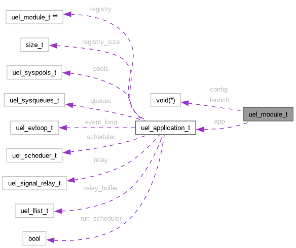

uel_module_t Struct Reference
A module is an isolated unit of behaviour with lifecycle hooks. More...
Collaboration diagram for uel_module_t:

Data Fields | |
| uel_module_hook_t | config |
| uel_module_hook_t | launch |
| struct uel_application * | app |
| Keeps a reference to the application onto which the module is loaded. | |
Detailed Description
A module is an isolated unit of behaviour with lifecycle hooks.
Modules can serve as a variety of purposes:
- They can act as bridges to static data, such as SFRs;
- They can be object factories, meant to distribute and recycle objects to other modules;
- They can act as services, background processes that interact with other parts of the application in a sattelite-fashion.
Modules are meant to be singletons and user extendable.
Field Documentation
◆ config
| uel_module_hook_t uel_module_t::config |
The config hook should be used for any setup of the module dependencies. It fires after the module has been fully initialised, but may still be in an inconsistent state.
◆ launch
| uel_module_hook_t uel_module_t::launch |
The launch hook is used to start a module. The application will only fire it once all loaded modules are both initialised and configurated (i.e. config hook has been called).
The documentation for this struct was generated from the following file:
- include/uevloop/utils/module.h
Generated by